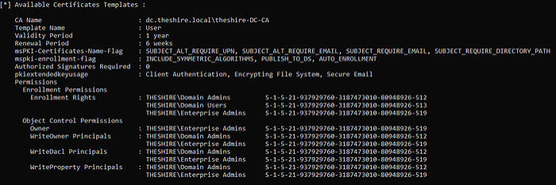
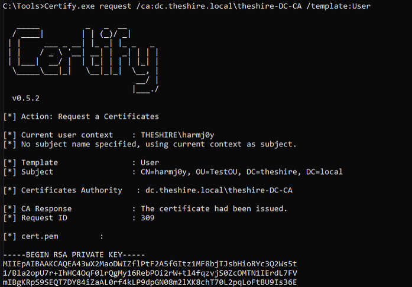

⠀⠀⠀⢠⡇⠀⠀⠀⠀⠀⠀⠀⠀⠀⠀⠀⠀⠀⠀⠀⠀⠀⠀⠀⠀⠀⠀⠀⠀⠀⠀⠀⠀⠀⠀⠀⠀⠀⠀⠀⠀⠀⠀⠀⠀⠀⠀⠀⠀⠀⠀⠀⠀⠀⠀⢸⡄⠀⠀⠀
⠀⠀⠀⢸⡇⠀⠀⠀⠀⠀⠀⠀⠀⠀⠀⠀⠀⠀⠀⠀⠀⠀⠀⠀⠀⠀⠀⠀⠀⠀⠀⠀⠀⠀⠀⠀⠀⠀⠀⠀⠀⠀⠀⠀⠀⠀⠀⠀⠀⠀⠀⠀⠀⠀⠀⢸⡇⠀⠀⠀
⢀⠀⠀⢸⡇⠀⠀⠀⠀⠀⠀⠀⠀⠀⠀⠀⠀⠀⠀⠀⠀⠀⠀⠀⠀⠀⠀⠀⠀⠀⠀⠀⠀⠀⠀⠀⠀⠀⠀⠀⠀⠀⠀⠀⠀⠀⠀⠀⠀⠀⠀⠀⠀⠀⠀⢸⡇⠀⠀⡀
⠘⡀⠀⢸⣿⠀⠀⠀⠀⠀⠀⠀⠀⠀⠀⠀⠀⠀⠀⠀⠀⠀⠀⠀⠀⠀⠀⠀⠀⠀⠀⠀⠀⠀⠀⠀⠀⠀⠀⠀⠀⠀⠀⠀⠀⠀⠀⠀⠀⠀⠀⠀⠀⠀⠀⣾⡇⠀⢀⠇
⠀⣧⠀⢸⣿⡆⠀⠀⠀⠀⠀⠀⠀⠀⠀⠀⠀⠀⠀⠀⠀⠀⠀⠀⠀⠀⠀⠀⠀⠀⠀⠀⠀⠀⠀⠀⠀⠀⠀⠀⠀⠀⠀⠀⠀⠀⠀⠀⠀⠀⠀⠀⠀⠀⢠⣿⡇⠀⣼⠀
⠀⢸⣆⠀⣿⣷⡀⠀⠀⠀⠀⠀⠀⠀⠀⠀⠀⠀⠀⠀⠀⠀⠀⠀⠀⠀⠀⠀⠀⠀⠀⠀⠀⠀⠀⠀⠀⠀⠀⠀⠀⠀⠀⠀⠀⠀⠀⠀⠀⠀⠀⠀⠀⠀⣾⣿⠀⣰⡏⠀
⢱⡀⢿⣆⠸⣿⣧⠀⠀⠀⠀⠀⠀⠀⠀⠀⠀⠀⠀⠀⠀⠀⠀⠀⠀⠀⠀⠀⠀⠀⠀⠀⠀⠀⠀⠀⠀⠀⠀⠀⠀⠀⠀⠀⠀⠀⠀⠀⠀⠀⠀⠀⠀⣼⣿⡏⣰⡿⠀⡌
⠀⢷⡈⢿⣧⣻⣿⣧⡀⠀⠀⠀⠀⠀⠀⠀⠀⠀⠀⠀⠀⠀⠀⠀⠀⠀⠀⠀⠀⠀⠀⠀⠀⠀⠀⠀⠀⠀⠀⠀⠀⠀⠀⠀⠀⠀⠀⠀⠀⠀⠀⢀⣼⣿⣟⣴⡿⢁⡾⠀
⢀⠈⢷⣌⢿⣿⣿⣿⣷⣄⠀⠀⠀⠀⠀⠀⠀⠀⠀⠀⠀⠀⠀⠀⠀⠀⠀⠀⠀⠀⠀⠀⠀⠀⠀⠀⠀⠀⠀⠀⠀⠀⠀⠀⠀⠀⠀⠀⠀⠀⢠⣾⣿⣿⣿⡿⣡⡾⠁⡀
⠀⠳⡈⢻⣦⡻⣿⣿⣿⣿⣦⡀⠀⠀⠀⠀⠀⠀⠀⠀⠀⠀⠀⠀⠀⠀⠀⠀⠀⠀⠀⠀⠀⠀⠀⠀⠀⠀⠀⠀⠀⠀⠀⠀⠀⠀⠀⠀⢀⣴⣿⣿⣿⣿⣟⣵⡟⢁⠞⠀
⠀⠀⠙⢦⡹⣿⣿⣿⣿⣿⣿⣿⣶⣄⠀⠀⠀⠀⠀⠀⠀⠀⠀⠀⠀⠀⠀⠀⠀⠀⠀⠀⠀⠀⠀⠀⠀⠀⠀⠀⠀⠀⠀⠀⠀⠀⣠⣶⣿⣿⣿⣿⣿⣿⣿⢏⣴⠋⠀⠀
⠀⠀⠀⡈⠻⣾⣿⣿⣿⣿⣿⣿⣿⣿⣿⣦⣄⡀⠀⠀⠀⠀⠀⠀⠀⠀⠀⠀⠀⠀⠀⠀⠀⠀⠀⠀⠀⠀⠀⠀⠀⠀⢀⣠⣴⣿⣿⣿⣿⣿⣿⣿⣿⣿⣷⠟⢁⠀⠀⠀
⠀⠀⠀⠈⠢⣌⠻⣿⣿⣿⣿⣿⣿⣿⣿⣿⣿⣿⣷⣶⣤⣄⣀⡀⠀⠀⠀⠀⠀⠀⠀⠀⠀⠀⠀⠀⢀⣀⣠⣤⣶⣾⣿⣿⣿⣿⣿⣿⣿⣿⣿⣿⣿⠟⣡⠔⠁⠀⠀⠀
⠀⠀⠀⠀⢀⠈⠛⢶⣿⣿⣿⣿⣿⣿⣿⣿⣿⣿⣿⣿⣿⣿⣿⣿⣿⡆⠀⠀⠀⠀⠀⠀⠀⠀⢰⣿⣿⣿⣿⣿⣿⣿⣿⣿⣿⣿⣿⣿⣿⣿⣿⣿⡷⠛⠁⡀⠀⠀⠀⠀
⠀⠀⠀⠀⠀⠉⠒⠦⣬⣛⣿⣿⣿⣿⣿⣿⣿⣿⣿⣿⣿⣿⣿⣿⣿⡿⠀⠀⠀⠀⠀⠀⠀⠀⢿⣿⣿⣿⣿⣿⣿⣿⣿⣿⣿⣿⣿⣿⣿⣿⣛⣥⠴⠒⠉⠀⠀⠀⠀⠀
⠀⠀⠀⠀⠀⠀⠠⠤⢤⣌⣉⣛⣿⣿⣿⣿⣿⣿⣿⣿⣿⣿⣿⣿⠟⠁⠀⠀⠀⠀⠀⠀⠀⠀⠀⠻⣿⣿⣿⣿⣿⣿⣿⣿⣿⣿⣿⣿⣛⣉⣡⡤⠤⠄⠀⠀⠀⠀⠀⠀
⠀⠀⠀⠀⠀⠀⠀⣀⣀⣀⣀⣉⣭⣭⣽⣿⣿⣿⣿⣿⣿⣿⣿⡏⠀⠀⠀⠀⠀⠀⠀⠀⠀⠀⠀⠀⠹⣿⣿⣿⣿⣿⣿⣿⣿⣯⣭⣭⣉⣀⣀⣀⣀⠀⠀⠀⠀⠀⠀⠀
⠀⠀⠀⠀⠀⠀⠀⠀⠀⠀⠉⠉⢉⣉⣭⣽⣿⣿⣿⣿⣿⣿⣿⡀⠀⠀⠀⠀⠀⠀⠀⠀⠀⠀⠀⠀⠀⣿⣿⣿⣿⣿⣿⣿⣿⣭⣉⣉⠉⠉⠀⠀⠀⠀⠀⠀⠀⠀⠀⠀
⠀⠀⠀⠀⠀⠀⠀⠀⠒⠒⠛⠛⠛⠛⢛⣩⣿⣿⣿⣿⣿⣿⣿⣇⠀⠀⠀⠀⠀⠀⠀⠀⠀⠀⠀⠀⣸⣿⣿⣿⣿⣿⣿⣿⣭⡛⠛⠛⠛⠛⠒⠒⠀⠀⠀⠀⠀⠀⠀⠀
⠀⠀⠀⠀⠀⠀⠀⠀⠀⠀⣀⠤⠴⠾⠟⠛⣫⣿⣿⣿⣿⣿⣿⣿⣆⠀⠀⠀⠀⠀⠀⠀⠀⠀⠀⣰⣿⣿⣿⣿⣿⣿⣿⣝⠛⠻⠷⠦⠤⣀⠀⠀⠀⠀⠀⠀⠀⠀⠀⠀
⠀⠀⠀⠀⠀⠀⠀⠀⠀⠀⠀⠀⣀⣤⠶⠟⠛⣫⣿⣿⣿⣿⣿⣿⣿⣆⠀⠀⠀⠀⠀⠀⠀⠀⣰⣿⣿⣿⣿⣿⣿⣿⣝⠛⠻⠶⢤⣀⠀⠀⠀⠀⠀⠀⠀⠀⠀⠀⠀⠀
⠀⠀⠀⠀⠀⠀⠀⠀⠀⠀⠀⠀⠀⠀⢀⡤⠾⠛⣡⣿⣿⣿⣿⣿⣿⣿⡀⠀⠀⠀⠀⠀⠀⢀⣿⣿⣿⣿⣿⣿⢿⣎⠛⠷⢤⡀⠀⠀⠀⠀⠀⠀⠀⠀⠀⠀⠀⠀⠀⠀
⠀⠀⠀⠀⠀⠀⠀⠀⠀⠀⠀⠀⠀⠀⠀⠀⠀⠚⠋⢀⠿⠋⡿⣿⣿⣿⡇⠀⠀⠀⠀⠀⠀⢸⣿⣿⣿⢿⠙⠿⡄⠙⠓⠀⠀⠀⠀⠀⠀⠀⠀⠀⠀⠀⠀⠀⠀⠀⠀⠀
⠀⠀⠀⠀⠀⠀⠀⠀⠀⠀⠀⠀⠀⠀⠀⠀⠀⠀⠀⠀⠀⠀⠀⠸⣿⣿⡇⠀⠀⠀⠀⠀⠀⢸⣿⣿⠇⠀⠁⠀⠀⠀⠀⠀⠀⠀⠀⠀⠀⠀⠀⠀⠀⠀⠀⠀⠀⠀⠀⠀
⠀⠀⠀⠀⠀⠀⠀⠀⠀⠀⠀⠀⠀⠀⠀⠀⠀⠀⠀⠀⠀⠀⠀⠀⢻⣿⡇⠀⠀⠀⠀⠀⠀⢸⣿⡟⠀⠀⠀⠀⠀⠀⠀⠀⠀⠀⠀⠀⠀⠀⠀⠀⠀⠀⠀⠀⠀⠀⠀⠀
⠀⠀⠀⠀⠀⠀⠀⠀⠀⠀⠀⠀⠀⠀⠀⠀⠀⠀⠀⠀⠀⠀⠀⠀⠘⣿⡇⠀⠀⠀⠀⠀⠀⢸⣿⠇⠀⠀⠀⠀⠀⠀⠀⠀⠀⠀⠀⠀⠀⠀⠀⠀⠀⠀⠀⠀⠀⠀⠀⠀
⠀⠀⠀⠀⠀⠀⠀⠀⠀⠀⠀⠀⠀⠀⠀⠀⠀⠀⠀⠀⠀⠀⠀⠀⠀⣿⡇⠀⠀⠀⠀⠀⠀⢸⣿⠀⠀⠀⠀⠀⠀⠀⠀⠀⠀⠀⠀⠀⠀⠀⠀⠀⠀⠀⠀⠀⠀⠀⠀⠀
⠀⠀⠀⠀⠀⠀⠀⠀⠀⠀⠀⠀⠀⠀⠀⠀⠀⠀⠀⠀⠀⠀⠀⠀⠀⢻⡇⠀⠀⠀⠀⠀⠀⢸⡿⠀⠀⠀⠀⠀⠀⠀⠀⠀⠀⠀⠀⠀⠀⠀⠀⠀⠀⠀⠀⠀⠀⠀⠀⠀
⠀⠀⠀⠀⠀⠀⠀⠀⠀⠀⠀⠀⠀⠀⠀⠀⠀⠀⠀⠀⠀⠀⠀⠀⠀⢸⡇⠀⠀⠀⠀⠀⠀⢸⡇⠀⠀⠀⠀⠀⠀⠀⠀⠀⠀⠀⠀⠀⠀⠀⠀⠀⠀⠀⠀⠀⠀⠀⠀⠀
⠀⠀⠀⠀⠀⠀⠀⠀⠀⠀⠀⠀⠀⠀⠀⠀⠀⠀⠀⠀⠀⠀⠀⠀⠀⢸⡇⠀⠀⠀⠀⠀⠀⢸⡇⠀⠀⠀⠀⠀⠀⠀⠀⠀⠀⠀⠀⠀⠀⠀⠀⠀⠀⠀⠀⠀⠀⠀⠀⠀
⠀⠀⠀⠀⠀⠀⠀⠀⠀⠀⠀⠀⠀⠀⠀⠀⠀⠀⠀⠀⠀⠀⠀⠀⠀⢸⡇⠀⠀⠀⠀⠀⠀⢸⡇⠀⠀⠀⠀⠀⠀⠀⠀⠀⠀⠀⠀⠀⠀⠀⠀⠀⠀⠀⠀⠀⠀⠀⠀⠀
⠀⠀⠀⠀⠀⠀⠀⠀⠀⠀⠀⠀⠀⠀⠀⠀⠀⠀⠀⠀⠀⠀⠀⠀⠀⠀⡇⠀⠀⠀⠀⠀⠀⢸⠃⠀⠀⠀⠀⠀⠀⠀⠀⠀⠀⠀⠀⠀⠀⠀⠀⠀⠀⠀⠀⠀⠀⠀⠀⠀
⠀⠀⠀⠀⠀⠀⠀⠀⠀⠀⠀⠀⠀⠀⠀⠀⠀⠀⠀⠀⠀⠀⠀⠀⠀⠀⡇⠀⠀⠀⠀⠀⠀⢸⠀⠀⠀⠀⠀⠀⠀⠀⠀⠀⠀⠀⠀⠀⠀⠀⠀⠀⠀⠀⠀⠀⠀⠀⠀⠀
⠀⠀⠀⠀⠀⠀⠀⠀⠀⠀⠀⠀⠀⠀⠀⠀⠀⠀⠀⠀⠀⠀⠀⠀⠀⠀⡇⠀⠀⠀⠀⠀⠀⢸⠀⠀⠀⠀⠀⠀⠀⠀⠀⠀⠀⠀⠀⠀⠀⠀⠀⠀⠀⠀⠀⠀⠀⠀⠀⠀
⠀⠀⠀⠀⠀⠀⠀⠀⠀⠀⠀⠀⠀⠀⠀⠀⠀⠀⠀⠀⠀⠀⠀⠀⠀⠀⡇⠀⠀⠀⠀⠀⠀⢸⠀⠀⠀⠀⠀⠀⠀⠀⠀⠀⠀⠀⠀⠀⠀⠀⠀⠀⠀⠀⠀⠀⠀⠀⠀⠀
⠀⠀⠀⠀⠀⠀⠀⠀⠀⠀⠀⠀⠀⠀⠀⠀⠀⠀⠀⠀⠀⠀⠀⠀⠀⠀⡇⠀⠀⠀⠀⠀⠀⢸⠀⠀⠀⠀⠀⠀⠀⠀⠀⠀⠀⠀⠀⠀⠀⠀⠀⠀⠀⠀⠀⠀⠀⠀⠀⠀
⠀⠀⠀⠀⠀⠀⠀⠀⠀⠀⠀⠀⠀⠀⠀⠀⠀⠀⠀⠀⠀⠀⠀⠀⠀⠀⡇⠀⠀⠀⠀⠀⠀⢸⠀⠀⠀⠀⠀⠀⠀⠀⠀⠀⠀⠀⠀⠀⠀⠀⠀⠀⠀⠀⠀⠀⠀⠀⠀⠀
What are AD CS and certificates?
Serviços de Certificados do Active Directory, certificados são documentos eletrônicos assinados em formato X.509 que podem ser usados para criptografia, assinatura de mensagens e/ou autenticação (nosso foco). As informações incluídas em um certificado vinculam uma identidade (o sujeito) a um par de chaves pública/privada. Uma aplicação pode então usar o par de chaves nas operações como prova da identidade do usuário. As Autoridades Certificadoras (CAs) são responsáveis pela emissão dos certificados.
Termos e siglas
Overview
Em um nível geral, os clientes geram um par de chaves público-privadas, e a chave pública é colocada em uma mensagem de solicitação de assinatura de certificado (CSR) junto com outros detalhes, como o assunto do certificado e o nome do modelo de certificado. Os clientes então enviam o CSR para o servidor da CA Empresarial. O servidor de CA então verifica se o cliente pode solicitar certificados. Se sim, ele determina se emitirá um certificado pesquisando o modelo de certificado objeto AD especificado no CSR. A CA verificará se as permissões do objeto AD do modelo de certificado permitem que a conta autenticante obtenha um certificado. Se sim, a CA gera um certificado usando as configurações de "blueprint" definidas pelo modelo de certificado (por exemplo, EKUs, configurações de criptografia, requisitos de emissão, etc.) e usando as outras informações fornecidas no CSR, se permitido pelas configurações do modelo do certificado. A CA assina o certificado usando sua chave privada e depois o devolve ao cliente.
Figura 1
SAN pode ser descartada no contexto de persitência de conta, porém é essencial para entender outros ataques de AD CS, por isso irei deixar a explicação do que seria SAN em si.
Subject Alternative Name (SAN) é uma extensão de certificados X.509 que permite associar identidades adicionais ao certificado além do Subject. Em certificados TLS, isso é amplamente utilizado para suportar múltiplos domínios com um único certificado. Entretanto, quando certificados contendo EKUs de autenticação (como Client Authentication ou Smart Card Logon) são emitidos por uma infraestrutura AD CS mal configurada, a extensão SAN pode introduzir um vetor crítico de escalonamento de privilégios. Em determinados cenários de autenticação baseada em certificados como Kerberos PKINIT ou Schannel o Domain Controller pode mapear o certificado apresentado a uma conta do Active Directory com base em um UPN especificado na SAN.
Caso um template de certificado permita que solicitantes não privilegiados forneçam arbitrariamente o conteúdo da SAN (por exemplo, através da flag ENROLLEE_SUPPLIES_SUBJECT_ALT_NAME), e a CA não valide se o solicitante é o legítimo proprietário do UPN informado, um atacante pode obter um certificado válido que será aceito pelo domínio como pertencente à conta alvo.
Esse tipo de misconfiguração em templates do AD CS pode resultar em autenticação como usuários de maior privilégio, caracterizando um vetor de escalonamento de privilégios em domínio.
Persistência de Conta
Com os conceitos de AD CS e Subject Alternative Name (SAN) em mente, é possível estabelecer persistência de identidade abusando de certificados emitidos por uma CA empresarial mal configurada.
Em ambientes com Active Directory Certificate Services, usuários ou contas de máquina podem solicitar certificados a partir de templates para os quais possuam permissão de enrollment. No contexto de roubo e persistência de credenciais, o objetivo é identificar templates que emitam certificados com EKUs compatíveis com autenticação no domínio (como Client Authentication ou Smart Card Logon).
Certify pode ser utilizada para enumerar templates potencialmente relevantes:
Certify.exe find /clientauth
Esse comando consulta o LDAP em busca de templates que suportem autenticação, permitindo uma triagem inicial.
Isso também pode ser feito via PSPKIAudit com:
Get-AuditCertificateTemplate | ?{ $_. HasAuthenticationEku}
Caso o atacante possua acesso a uma interface gráfica, a solicitação de certificados pode ser realizada via MMC (certlm.msc ou snap-in de Certificates). Em cenários não interativos, ferramentas como Certify ou certreq.exe podem ser utilizadas para realizar inscrições maliciosas.
Se o template permitir que o solicitante controle o Subject ou a SAN (por exemplo, através da flag ENROLLEE_SUPPLIES_SUBJECT_ALT_NAME) e a CA não validar a propriedade do UPN informado, o atacante pode obter um certificado válido associado a outra identidade do domínio.
Os certificados emitidos podem então ser utilizados com o Rubeus para autenticação baseada em certificados via
PKINIT, permitindo acesso ao Active Directory como o usuário alvo enquanto o certificado permanecer válido.
Esse método fornece persistência de longo prazo, não envolve acesso ao LSASS e pode ser realizado sem
privilégios elevados, dependendo das permissões do template.
AD CS is very good.
by Leonardo Kauan - krnl